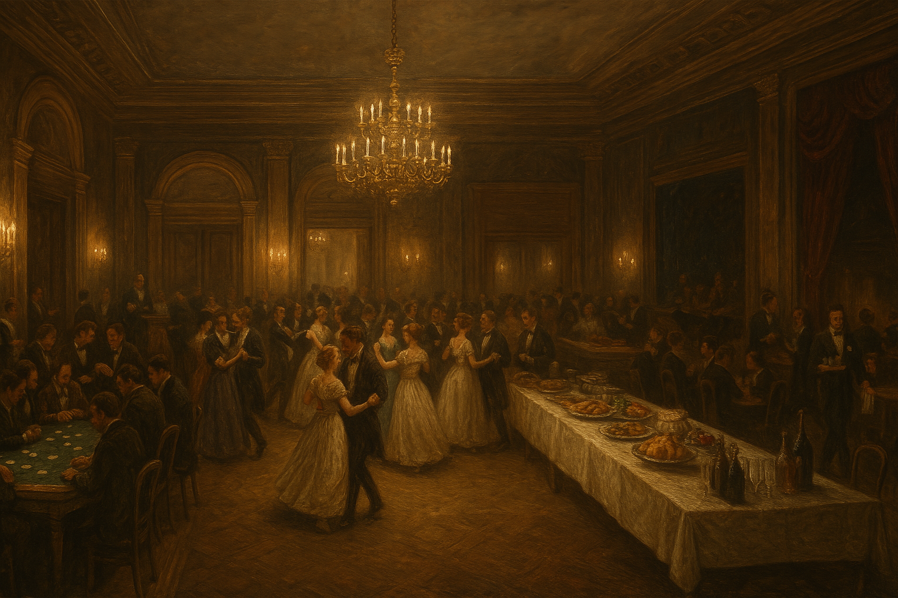

Chapter 2: Banquet Night, Holy Night
Gathering of the Chosen


Gathering of the Chosen
15049.03.20
隨著鐘聲響起，鑰跟隨著西奧多・伊登爵士一起移動到了宴會廳。
「歡迎西奧多・伊登爵士入場！」
冒險者們看見了一對對舞伴步入舞池，跳著正式的舞步；檯子邊聚集了賭客，莊家開始主持骰子遊戲的賭局；而自助餐區則有了專門的傭人幫忙打菜；部分傭人擇端著飲料穿梭在客人之間。
「歡迎托瑪辛・風暴女士入場！」
阿龍與雷亞加入了舞池，但兩人對於正式的舞步完全不了解，笨拙的腳不斷踩到對方，很快地，兩人便逃出了舞池。
冒險者們也加入了骰子遊戲的賭局，但在幾場遊戲後，幾乎都輸了錢。
「歡迎萊里・里奇蒙女士入場！」
冒險者們聽見熟悉的名字後，目光便轉向宴會廳入口。趁著沒有多少人圍繞在萊里身邊時，他們趕緊和萊里談話。冒險者們確認自己是被萊里邀請來到這裡的，同時萊里對於他父親的狀況有所掌握，而鑰也為傭人蒂娜請願，不要馬上把他開除。
「歡迎班尼狄克・亞索爵士和弗雷德里克・諾曼爵士入場！」
毛毛看見諾曼爵士朝著他從遠處眨了眼，便也回了個眼，然後諾曼爵士便被其他賓客團團圍住了。
冒險者們看見舞台上的樂隊換了人，樂曲從原本正式的舞曲，換成了較為輕鬆的鄉村音樂。
宴會盛大而熱鬧，冒險者們各自享受喜愛的環節，不論是吃東西、與人攀談，或是觀察其他人都在做些什麼事。不久後，大家開始發現有人陸續從宴會廳悄悄離開了，冒險者們也各自離開。
在大宅外，冒險者們閒逛著花園，或移動到客人房。大家最終在客人房一樓的酒吧集合，慢慢度過這個夜晚。（暈倒的布魯斯則是被阿龍強行帶到同一間客房一同入住。）
15049.03.20
As the bell rang, Kaname followed Syr Theodore Eden into the banquet hall.
"Welcome, Syr Theodore Eden!"
The adventurers watched pairs of dance partners step onto the floor and perform formal dances. Gamblers gathered around the tables as the dealers began running dice games. In the buffet area, dedicated servants helped plate the food, while some of the other servants moved among the guests carrying drinks.
"Welcome, Lady Thomasine Storm!"
Al-lon and Leah joined the dance floor, but neither of them understood formal dance steps at all. Their clumsy feet kept stepping on each other, and before long, the two of them fled the floor.
The adventurers also joined the dice games, but after a few rounds, almost all of them had lost money.
"Welcome, Lady Riley Richmond!"
When the adventurers heard the familiar name, they immediately turned toward the entrance to the banquet hall. Taking advantage of a moment when not many people were surrounding Riley, they hurried over to speak with her. The adventurers confirmed that it was Riley who had invited them here. At the same time, Riley seemed to understand the situation with her father, and Kaname also pleaded on behalf of the servant Tina, asking that she not be dismissed immediately.
"Welcome, Syr Benedict Yaso and Syr Frederick Norman!"
Fur saw Syr Norman wink at him from afar, so he winked back. After that, Syr Norman was quickly surrounded on all sides by the other guests.
The adventurers noticed that the band on stage had changed. The music shifted from formal dance pieces to more relaxed country tunes.
The banquet was grand and lively, and each of the adventurers enjoyed the parts they liked best, whether that meant eating, chatting with people, or watching what everyone else was doing. Before long, they began to notice that people were quietly slipping out of the banquet hall one after another, and the adventurers gradually left as well.
Outside the manor, the adventurers wandered the gardens or made their way to the guest rooms. In the end, they gathered at the bar on the first floor of the guest quarters and slowly passed the rest of the night there. Bruce, who had fainted, was forcibly dragged by Al-lon into the same guest room to stay the night.